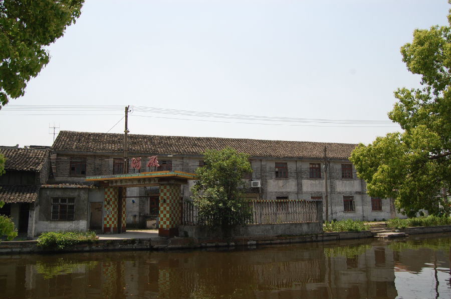

嘉兴市文物保护网 · 市级文物保护点 · 2022-05-16 · 原文

油车港镇开关厂旧址位于秀洲区油车港镇港南大街。建厂具体时间不详，据老工人回忆原为草包厂，1968年后改为开关厂，并建办公楼及厂房。现存建筑3栋，总建筑占地面积约763平方米，自北向南平行排列，砖混结构，主要使用小青砖，屋顶为硬山顶。最北一间二层楼房为办公楼，通面阔32米，通进深8.2米。南面两间平房为生产车间，规格相同，通面阔30.5米，通进深8.2米。该旧址建筑布局尚完整，保存较好，是嘉兴工业历史发展难得的实物见证，具有较高的历史和科学价值。2021年被公布为嘉兴市文物保护点。